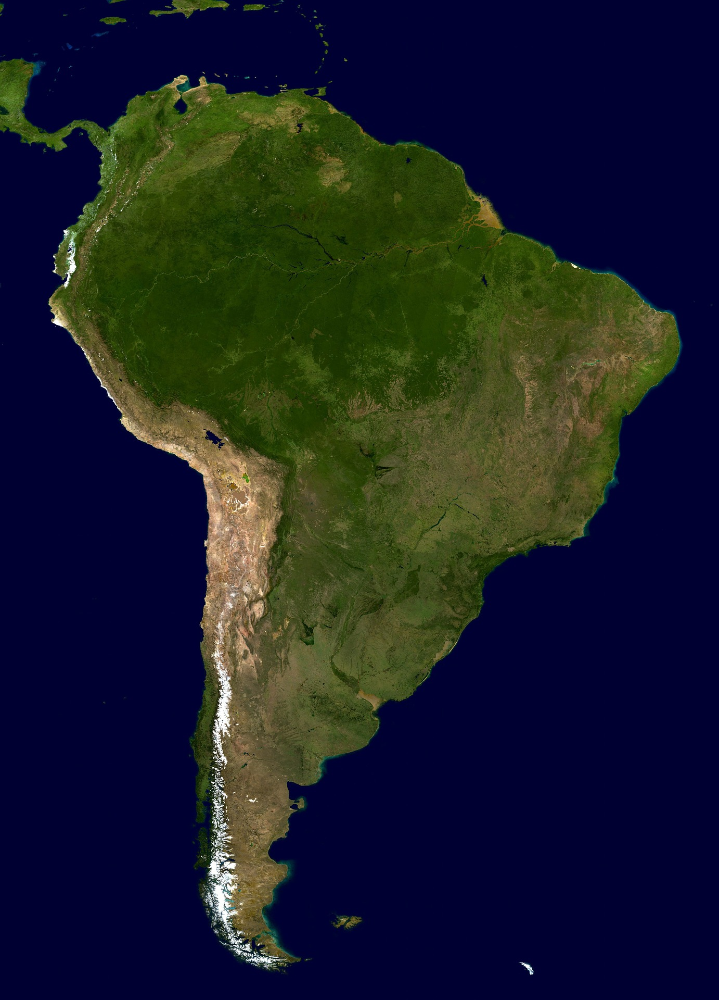
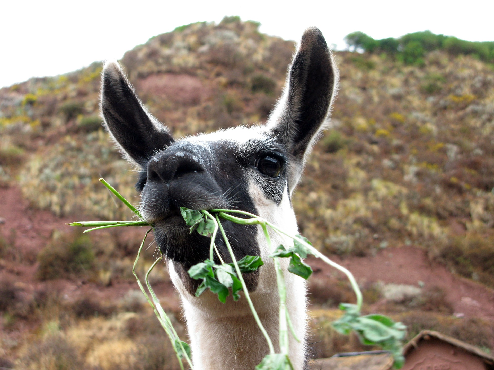
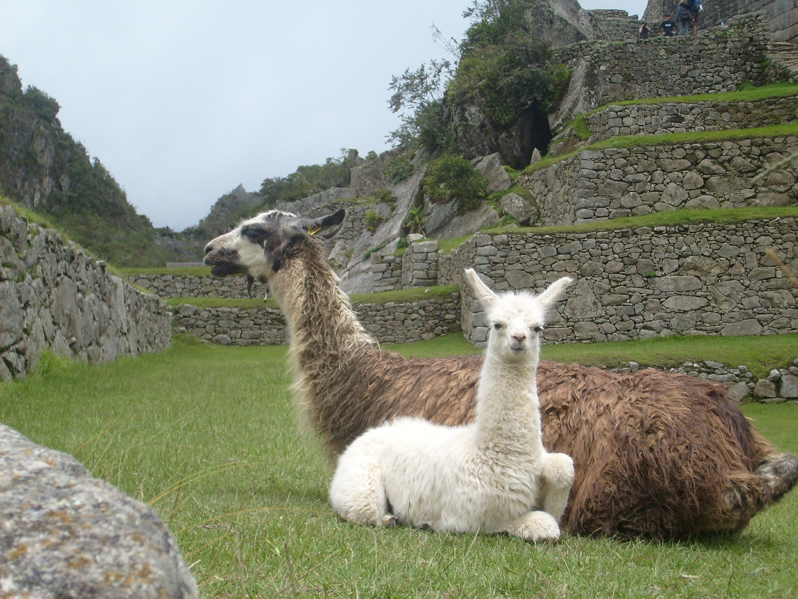

The llama is a relative of the camel that calls the Andes Mountains home.
Our great furry friends were domesticated by the native population in South America
due to their ability to carry large loads of supplies while navigating the rocky mountain
terrain. Llamas can carry up to 75 pounds whilst traveling 20 miles a day!

Llamas are strictly herbivores, eating mainly grass. Like their camel cousins, llamas can survive
off of a large variety of plants and can go for long periods without water. These traits help them
adapt to the mountain environment they live in.

Despite being domesticated as a mode of transporting goods, llamas are most certainly not all work and
no play! Llamas have been known to refuse to move if the load on their backs is too heavy! If unhappy with their work load they will simply flop on the ground and lay there until the load is lightened. Make sure you treat your llama right as they helped pave the way for the great South American civilizations. Llama power has indeed moved mountains!
